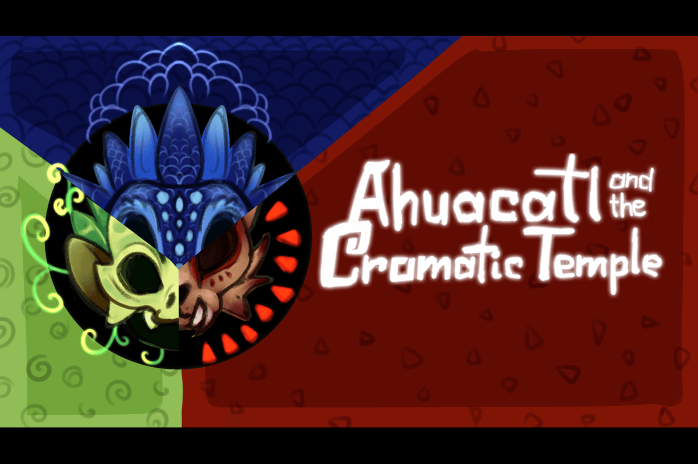

Ahuacatl and the Chromatic Temple
- role
- Mask-switching mechanic, game feel, traps
- stack
- Unreal Engine 5 · C++ · Blueprints
- team
- 8 people
- duration
- 48 hours — Global Game Jam 2026
Ahuacatl is a puzzle game developed during the Global Game Jam 2026 in 48 hours by a team of 3 programmers, 3 artists, 1 designer, and 1 musician, built in Unreal Engine 5 using a mix of C++ and Blueprints. The game focuses on fast, readable challenges, designed so players can quickly understand the rules and keep moving forward.
The core mechanic is about putting on and taking off different masks to progress: each mask changes how you interact with the environment, unlocks new paths, and reshapes how you approach each puzzle. The fun comes from switching masks at the right moment to overcome obstacles and find the correct route.
what i did
I developed the main mask-switching mechanic, worked on game feel (player responsiveness and feedback), implemented traps, and supported the integration and polish of other team systems to deliver a solid result within the jam’s time constraints.


credits
- Game Design and Production
- Juan Andrés Mayorca
- Music and SFX
- Kristján Viktor Steinarsson
tip: use ← → to move between projects